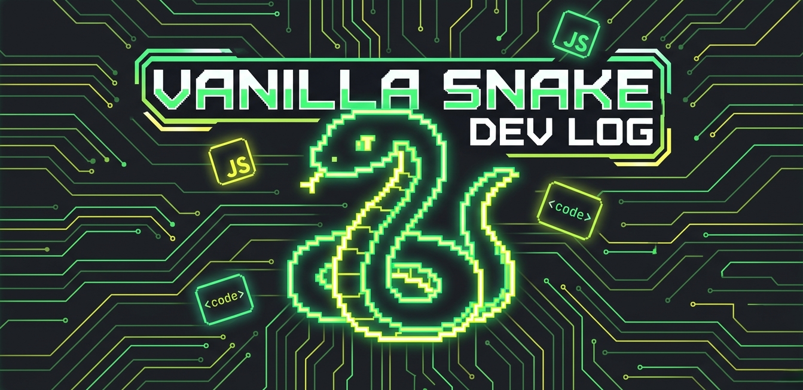

System
개발일지 모음
VanillaJS 게임을 개발하면서 발생한 트러블슈팅이나 기획등을 기록하고자 별도의 페이지를 만들었습니다. 평소에 패들렛 스타일의 레이아웃이 깔끔하다고 생각하여 구현해보았습니다. 개발일지를 클릭하면 모달창으로 내용이 출력되는 것이 포인트입니다.
 JS-Arcade
JS-Arcade
프로젝트의 탄생부터 완성까지, 기술적인 도전과 기록들
VanillaJS 게임을 개발하면서 발생한 트러블슈팅이나 기획등을 기록하고자 별도의 페이지를 만들었습니다. 평소에 패들렛 스타일의 레이아웃이 깔끔하다고 생각하여 구현해보았습니다. 개발일지를 클릭하면 모달창으로 내용이 출력되는 것이 포인트입니다.

순수 JS로 구현하는 스네이크 게임의 핵심 알고리즘과 트러블슈팅 기록입니다.